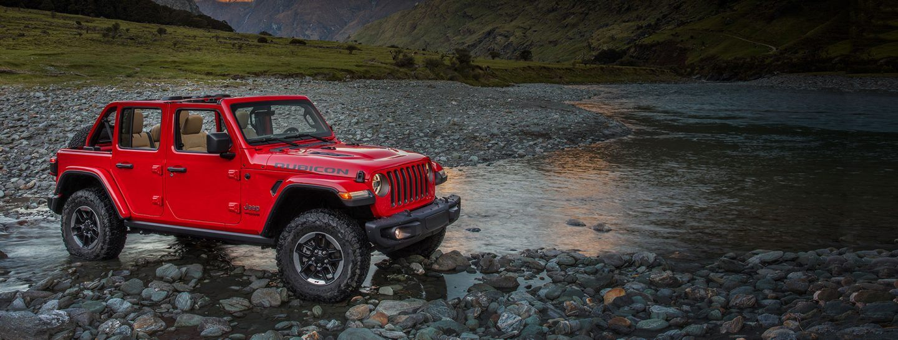

SAMOCHODY TERENOWE
Samochód terenowy − pojazd samochodowy przystosowany do pokonywania przeszkód terenowych. Może być samochodem osobowym (łazik, samochód osobowo-terenowy) lub ciężarowym. Zazwyczaj jest zbudowany w oparciu o ramę z napędem na wszystkie koła, specjalnymi oponami, skrzynią rozdzielczo-redukcyjną, zwiększonym prześwitem poprzecznym (190 - 400 mm) i zwiększoną zdolnością pokonywania wzniesień.
GALERIA:
